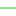

<!doctype html>
<html lang="en">
    <head>
        <meta charset="utf-8">
        <meta http-equiv="X-UA-Compatible" content="IE=edge">
        <meta name="viewport" content="initial-scale=1,user-scalable=no,maximum-scale=1,width=device-width">
        <meta name="mobile-web-app-capable" content="yes">
        <meta name="apple-mobile-web-app-capable" content="yes">
        <link rel="stylesheet" href="css/leaflet.css">
        <link rel="stylesheet" href="css/qgis2web.css"><link rel="stylesheet" href="css/fontawesome-all.min.css">
        <link rel="stylesheet" href="css/leaflet-search.css">
        <style>
        html, body, #map {
            width: 100%;
            height: 100%;
            padding: 0;
            margin: 0;
        }
        </style>
        <title></title>
    </head>
    <body>
        <div id="map">
        </div>
        <script src="js/qgis2web_expressions.js"></script>
        <script src="js/leaflet.js"></script>
        <script src="js/leaflet.rotatedMarker.js"></script>
        <script src="js/leaflet.pattern.js"></script>
        <script src="js/leaflet-hash.js"></script>
        <script src="js/Autolinker.min.js"></script>
        <script src="js/rbush.min.js"></script>
        <script src="js/labelgun.min.js"></script>
        <script src="js/labels.js"></script>
        <script src="js/leaflet-search.js"></script>
        <script src="data/ADMIN_1.js"></script>
        <script src="data/jangkauan_2.js"></script>
        <script src="data/SMA_3.js"></script>
        <script>
        var map = L.map('map', {
            zoomControl:true, maxZoom:28, minZoom:1
        })
        var hash = new L.Hash(map);
        map.attributionControl.setPrefix('<a href="https://github.com/tomchadwin/qgis2web" target="_blank">qgis2web</a> &middot; <a href="https://leafletjs.com" title="A JS library for interactive maps">Leaflet</a> &middot; <a href="https://qgis.org">QGIS</a>');
        var autolinker = new Autolinker({truncate: {length: 30, location: 'smart'}});
        var bounds_group = new L.featureGroup([]);
        function setBounds() {
            if (bounds_group.getLayers().length) {
                map.fitBounds(bounds_group.getBounds());
            }
        }
        map.createPane('pane_Positron_0');
        map.getPane('pane_Positron_0').style.zIndex = 400;
        var layer_Positron_0 = L.tileLayer('https://a.basemaps.cartocdn.com/light_all/{z}/{x}/{y}.png', {
            pane: 'pane_Positron_0',
            opacity: 1.0,
            attribution: '<a href="https://cartodb.com/basemaps/">Map tiles by CartoDB, under CC BY 3.0. Data by OpenStreetMap, under ODbL.</a>',
            minZoom: 1,
            maxZoom: 28,
            minNativeZoom: 0,
            maxNativeZoom: 20
        });
        layer_Positron_0;
        map.addLayer(layer_Positron_0);
        function pop_ADMIN_1(feature, layer) {
            var popupContent = '<table>\
                    <tr>\
                        <td colspan="2">' + (feature.properties['OBJECTID'] !== null ? autolinker.link(feature.properties['OBJECTID'].toLocaleString()) : '') + '</td>\
                    </tr>\
                    <tr>\
                        <td colspan="2">' + (feature.properties['METADATA'] !== null ? autolinker.link(feature.properties['METADATA'].toLocaleString()) : '') + '</td>\
                    </tr>\
                    <tr>\
                        <td colspan="2">' + (feature.properties['SRS_ID'] !== null ? autolinker.link(feature.properties['SRS_ID'].toLocaleString()) : '') + '</td>\
                    </tr>\
                    <tr>\
                        <th scope="row">WADMKC</th>\
                        <td>' + (feature.properties['WADMKC'] !== null ? autolinker.link(feature.properties['WADMKC'].toLocaleString()) : '') + '</td>\
                    </tr>\
                    <tr>\
                        <td colspan="2">' + (feature.properties['WADMKK'] !== null ? autolinker.link(feature.properties['WADMKK'].toLocaleString()) : '') + '</td>\
                    </tr>\
                    <tr>\
                        <td colspan="2">' + (feature.properties['WADMPR'] !== null ? autolinker.link(feature.properties['WADMPR'].toLocaleString()) : '') + '</td>\
                    </tr>\
                    <tr>\
                        <td colspan="2">' + (feature.properties['UUPP'] !== null ? autolinker.link(feature.properties['UUPP'].toLocaleString()) : '') + '</td>\
                    </tr>\
                </table>';
            layer.bindPopup(popupContent, {maxHeight: 400});
        }

        function style_ADMIN_1_0() {
            return {
                pane: 'pane_ADMIN_1',
                opacity: 1,
                color: 'rgba(228,26,28,1.0)',
                dashArray: '1,5',
                lineCap: 'square',
                lineJoin: 'bevel',
                weight: 4.0,
                fillOpacity: 0,
                interactive: true,
            }
        }
        map.createPane('pane_ADMIN_1');
        map.getPane('pane_ADMIN_1').style.zIndex = 401;
        map.getPane('pane_ADMIN_1').style['mix-blend-mode'] = 'normal';
        var layer_ADMIN_1 = new L.geoJson(json_ADMIN_1, {
            attribution: '',
            interactive: true,
            dataVar: 'json_ADMIN_1',
            layerName: 'layer_ADMIN_1',
            pane: 'pane_ADMIN_1',
            onEachFeature: pop_ADMIN_1,
            style: style_ADMIN_1_0,
        });
        bounds_group.addLayer(layer_ADMIN_1);
        map.addLayer(layer_ADMIN_1);
        function pop_jangkauan_2(feature, layer) {
            var popupContent = '<table>\
                    <tr>\
                        <th scope="row">REMARK</th>\
                        <td>' + (feature.properties['REMARK'] !== null ? autolinker.link(feature.properties['REMARK'].toLocaleString()) : '') + '</td>\
                    </tr>\
                    <tr>\
                        <td colspan="2"><strong>JARAK</strong><br />' + (feature.properties['JARAK'] !== null ? autolinker.link(feature.properties['JARAK'].toLocaleString()) : '') + '</td>\
                    </tr>\
                </table>';
            layer.bindPopup(popupContent, {maxHeight: 400});
        }

        function style_jangkauan_2_0(feature) {
            switch(String(feature.properties['JARAK'])) {
                case '>2000':
                    return {
                pane: 'pane_jangkauan_2',
                opacity: 1,
                color: 'rgba(233,122,162,1.0)',
                dashArray: '',
                lineCap: 'square',
                lineJoin: 'bevel',
                weight: 1.0,
                fillOpacity: 0,
                interactive: true,
            }
                    break;
                case '1000':
                    return {
                pane: 'pane_jangkauan_2',
                opacity: 1,
                color: 'rgba(142,87,215,1.0)',
                dashArray: '',
                lineCap: 'square',
                lineJoin: 'bevel',
                weight: 1.0,
                fillOpacity: 0,
                interactive: true,
            }
                    break;
                case '2000':
                    return {
                pane: 'pane_jangkauan_2',
                opacity: 1,
                color: 'rgba(31,205,39,1.0)',
                dashArray: '',
                lineCap: 'square',
                lineJoin: 'bevel',
                weight: 1.0,
                fillOpacity: 0,
                interactive: true,
            }
                    break;
                case '500':
                    return {
                pane: 'pane_jangkauan_2',
                opacity: 1,
                color: 'rgba(74,189,224,1.0)',
                dashArray: '',
                lineCap: 'square',
                lineJoin: 'bevel',
                weight: 1.0,
                fillOpacity: 0,
                interactive: true,
            }
                    break;
                default:
                    return {
                pane: 'pane_jangkauan_2',
                opacity: 1,
                color: 'rgba(208,187,85,1.0)',
                dashArray: '',
                lineCap: 'square',
                lineJoin: 'bevel',
                weight: 1.0,
                fillOpacity: 0,
                interactive: true,
            }
                    break;
            }
        }
        map.createPane('pane_jangkauan_2');
        map.getPane('pane_jangkauan_2').style.zIndex = 402;
        map.getPane('pane_jangkauan_2').style['mix-blend-mode'] = 'normal';
        var layer_jangkauan_2 = new L.geoJson(json_jangkauan_2, {
            attribution: '',
            interactive: true,
            dataVar: 'json_jangkauan_2',
            layerName: 'layer_jangkauan_2',
            pane: 'pane_jangkauan_2',
            onEachFeature: pop_jangkauan_2,
            style: style_jangkauan_2_0,
        });
        bounds_group.addLayer(layer_jangkauan_2);
        map.addLayer(layer_jangkauan_2);
        function pop_SMA_3(feature, layer) {
            var popupContent = '<table>\
                    <tr>\
                        <td colspan="2">' + (feature.properties['OID_'] !== null ? autolinker.link(feature.properties['OID_'].toLocaleString()) : '') + '</td>\
                    </tr>\
                    <tr>\
                        <td colspan="2">' + (feature.properties['Name'] !== null ? autolinker.link(feature.properties['Name'].toLocaleString()) : '') + '</td>\
                    </tr>\
                    <tr>\
                        <th scope="row">FolderPath</th>\
                        <td>' + (feature.properties['FolderPath'] !== null ? autolinker.link(feature.properties['FolderPath'].toLocaleString()) : '') + '</td>\
                    </tr>\
                </table>';
            layer.bindPopup(popupContent, {maxHeight: 400});
        }

        function style_SMA_3_0() {
            return {
                pane: 'pane_SMA_3',
                radius: 4.0,
                opacity: 1,
                color: 'rgba(35,35,35,1.0)',
                dashArray: '',
                lineCap: 'butt',
                lineJoin: 'miter',
                weight: 1,
                fill: true,
                fillOpacity: 1,
                fillColor: 'rgba(213,180,60,1.0)',
                interactive: true,
            }
        }
        map.createPane('pane_SMA_3');
        map.getPane('pane_SMA_3').style.zIndex = 403;
        map.getPane('pane_SMA_3').style['mix-blend-mode'] = 'normal';
        var layer_SMA_3 = new L.geoJson(json_SMA_3, {
            attribution: '',
            interactive: true,
            dataVar: 'json_SMA_3',
            layerName: 'layer_SMA_3',
            pane: 'pane_SMA_3',
            onEachFeature: pop_SMA_3,
            pointToLayer: function (feature, latlng) {
                var context = {
                    feature: feature,
                    variables: {}
                };
                return L.circleMarker(latlng, style_SMA_3_0(feature));
            },
        });
        bounds_group.addLayer(layer_SMA_3);
        map.addLayer(layer_SMA_3);
        var baseMaps = {};
        L.control.layers(baseMaps,{' SMA': layer_SMA_3,'jangkauan<br /><table><tr><td style="text-align: center;"></td><td>>2000</td></tr><tr><td style="text-align: center;"></td><td>1000</td></tr><tr><td style="text-align: center;"></td><td>2000</td></tr><tr><td style="text-align: center;"></td><td>500</td></tr><tr><td style="text-align: center;"></td><td></td></tr></table>': layer_jangkauan_2,' ADMIN': layer_ADMIN_1,"Positron": layer_Positron_0,}).addTo(map);
        setBounds();
        map.addControl(new L.Control.Search({
            layer: layer_jangkauan_2,
            initial: false,
            hideMarkerOnCollapse: true,
            propertyName: 'JARAK'}));
        document.getElementsByClassName('search-button')[0].className +=
         ' fa fa-binoculars';
        </script>
    </body>
</html>
